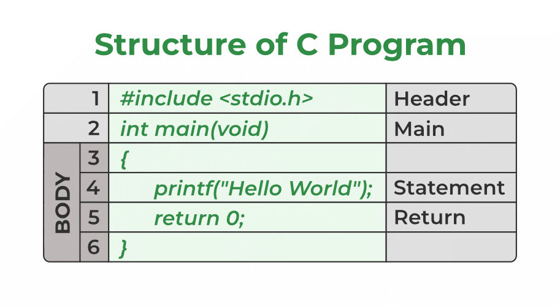

C is a procedural programming language initially developed by Dennis Ritchie in the year 1972 at Bell Laboratories of AT&T Labs. It was mainly developed as a system programming language to write the UNIX operating system.
Many later languages have borrowed syntax/features directly or indirectly from the C language. Like syntax of Java, PHP, JavaScript, and many other languages are mainly based on the C language. C++ is nearly a superset of C language (Only a few programs may compile in C, but not in C++).
So, if a person learns C programming first, it will help him to learn any modern programming language as well. As learning C help to understand a lot of the underlying architecture of the operating system. Like pointers, working with memory locations, etc.
After the above discussion, we can formally assess the structure of a C program. By structure, it is meant that any program can be written in this structure only. Writing a C program in any other structure will hence lead to a Compilation Error. The structure of a C program is as follows:
The first and foremost component is the inclusion of the Header files in a C program. A header file is a file with extension .h which contains C function declarations and macro definitions to be shared between several source files. All lines that start with # are processed by a preprocessor which is a program invoked by the compiler. In the above example, the preprocessor copies the preprocessed code of stdio.h to our file. The .h files are called header files in C. Some of the C Header files:
The next part of a C program is to declare the main() function. It is the entry point of a C program and the execution typically begins with the first line of the main(). The empty brackets indicate that the main doesn’t take any parameter (See this for more details). The int that was written before the main indicates the return type of main(). The value returned by the main indicates the status of program termination. See this post for more details on the return type.
The body of a function in the C program refers to statements that are a part of that function. It can be anything like manipulations, searching, sorting, printing, etc. A pair of curly brackets define the body of a function. All functions must start and end with curly brackets.
Statements are the instructions given to the compiler. In C, a statement is always terminated by a semicolon (;). In this particular case, we use printf() function to instruct the compiler to display “Hello World” text on the screen.
The last part of any C function is the return statement. The return statement refers to the return values from a function. This return statement and return value depend upon the return type of the function. The return statement in our program returns the value from main(). The returned value may be used by an operating system to know the termination status of your program. The value 0 typically means successful termination.